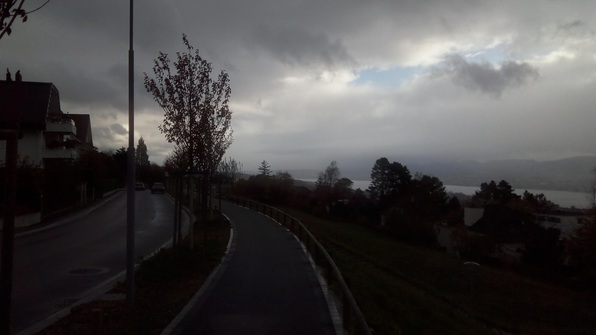

Got a good 10 hours of sleep and woke up at 1pm. (10, rather than 9, because Europe has some weird Daylight-Savings-Time like entity.
Got some breakfast, which was nontrivial because a massive kitchen cleaning was underway. This ancient tradition, dating back to the founding of Culmannstrasse, involves a subset of burghers who work all day, in exchange for pizza and an exemption from kitchen duty for the rest of the semester. I barely talked my way into the kitchen to get my cereal, despite previous guarantees that my box and fridge would remain accessible.
Read my QI lecture notes and refreshed myself on the different types of complex matrices, why unitary matrices represented time-evolution and Hermitian matrices represented measurements, and refreshed myself on the properties of the trace.
Then I took a walk/run up into the forest above my house, and ended by going down the Seilbahn Rigiblick (a funicular), which I hadn’t done before.

After I got back, I heated up some pasta (also a struggle) and kept working. After a while, I walked outside, saw that Betty’s window was open; we waved and I walked back inside to say hi :) To my surprise, she’d walked over and was there when I opened the Culmann door. We took a quick walk through the fog and light rain that ended up on the Polyterrasse terrace looking over the old city. It looked really cool shrouded in fog.
Walked back, kept working, got brain-fried and looked at possible flights back home for Thanksgiving. Eventually, it was time for more food, and I’d agreed with Betty and some others to meet at 7:30. Unfortunately, when we did, the kitchen yokels wouldn’t let us in! They totally threw away their accessibility guarantee. Our kitchen responsible, usually a balanced and friendly individual, reprimanded me “not to keep checking every 5 minutes” even though I’d been studying for 2 hours.
So… went back and Skyped Mom and Dad! A fun Skype, which meandered through sunny woods far from the crags of existentialism.
Then finally it was time for dinner! The kitchen cleaners had finished. I pulled out the hamburgers I’d cooked for myself the previous day, along with some mayonnaise and a frosty Chopfab lager, and sat down with Alexei, Betty, Ruth, Oliver, Tom. A good meal! Alexei had his first ever PB&J. Afterwards, played some foosball, then came back up and worked on the log!